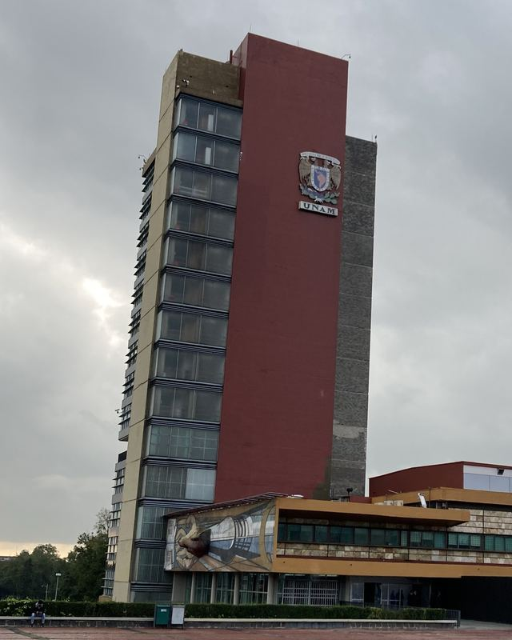

Construcción de Trabajadores Sociales
¡Te damos la bienvenida! Pronto elegirás las asignaturas que definirán tu rumbo profesional en la Facultad de Trabajo Social (FACTS).
Esta página te ayuda a encontrar el área del Trabajo Social en la que quieres ejercer en el futuro.
Aquí conectas tus materias optativas de 5.º a 9.º semestre con las cuatro Líneas de Profundización de la Facultad. Explora cómo cada asignatura se vincula con ámbitos reales de trabajo (hospitales, juzgados, comunidades, colectivos y organismos de derechos humanos) y descubre el perfil que mejor se adapta a tu vocación.
Elige una línea para ver su enfoque, sus materias, las instituciones donde se ejerce la profesión y los perfiles de egreso que desarrolla.


Campo profesional
Según Valero Chávez (pp. 134-135), el campo es el conjunto de condiciones que hacen posible un acontecimiento, o el límite de validez y aplicabilidad de un objeto de conocimiento. Aplicado al Trabajo Social:
Clave conceptual y operativa
Sirve para determinar las necesidades de formación y actualización de los trabajadores sociales y adecuarlas a las exigencias del desarrollo nacional.
Incidencia sobre lo social
Se define por la incidencia de la profesión en lo social, la cual se organiza en diversas áreas de intervención.
Marco: la política social
Valero Chávez la presenta de dos formas: como mediación del Estado para asegurar la continuidad de la sociedad y del sistema, o como resultado de movilizaciones sociales prolongadas.
Funciones genéricas
Dentro de ese campo se señalan cinco funciones genéricas, que se ejercen en las distintas áreas de acción:
- Investigación social
- Orientación y gestoría
- Administración
- Educación social
- Organización y promoción social
Niveles de acción
El Trabajo Social es una disciplina y profesión de las ciencias sociales orientada al diagnóstico, la intervención, la gestión y la evaluación de problemáticas que afectan a individuos, grupos y comunidades, en favor de los derechos humanos, la justicia social y el bienestar colectivo. Su ejercicio se organiza en dos niveles.
Nivel macro: cuatro Líneas de Profundización
Ejes rectores y áreas académicas de especialización que establece el plan de estudios.
Nivel operativo y laboral: nueve áreas profesionales
Ramas de inserción laboral donde se ubican las instituciones y con las que se vinculan las materias.
Líneas de Profundización
Áreas de acción y competencias
Selecciona un área laboral para ver dónde se ejerce, qué competencias se ponen en juego y con qué líneas se relaciona.
Cómo han cambiado las áreas de acción
El campo es el espacio amplio, definido por la intervención en lo social y por la política social. Las áreas son sus divisiones concretas, es decir, los ámbitos (instituciones, sectores o poblaciones) donde se ejercen las funciones. Cambian según la época y las necesidades sociales. La comparación por autor y década muestra cómo se fueron ampliando: de la asistencia hospitalaria y escolar de los años cuarenta a la promoción sociocultural y los derechos humanos.
Definición de Trabajo Social
Para Valero Chávez, el Trabajo Social es una disciplina que estudia al hombre en su situación social, mediante una tecnología social que permite determinar sus necesidades y carencias y promover su atención para lograr su bienestar social.
Descubre tu línea
Responde seis preguntas sobre tus intereses. El resultado sugiere la línea con la que tienes más afinidad y las áreas laborales relacionadas. No es un diagnóstico ni limita tu elección.